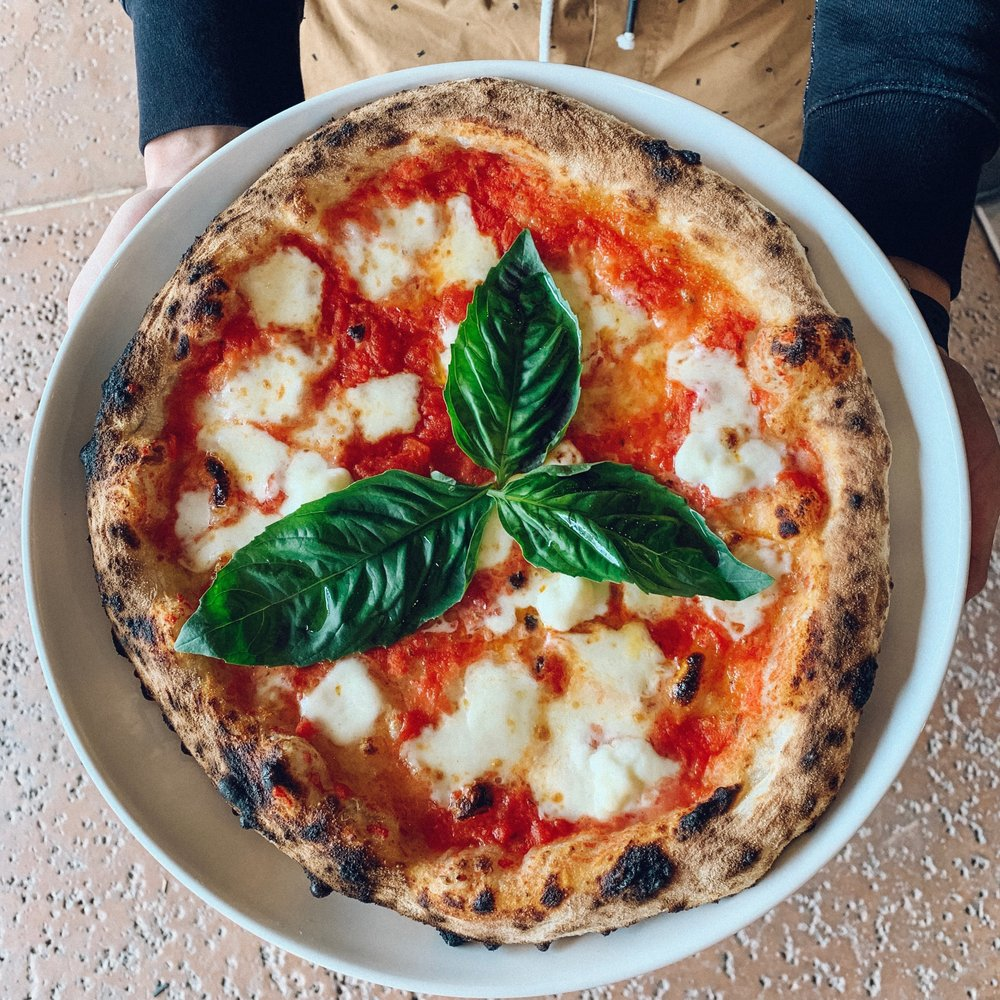

Margherita Pizza

Tell Me More!
They say pizza margherita recipe was invented in 1889 in honour of Margherita of Savoy, the Queen of Italy, by chef
Raffaele Esposito of the Brandi pizzeria, with ingredients representing the colors of the Italian flag. Several
scholars believe that its origins are far older and that its name comes from the flower, daisy (margherita in
Italian), because of the way the mozzarella was laid out.
So What's Traditional Pizza Made Of?
For the Dough (10 pizzas)
- 1.6 kg soft flour
- A bit more than 50 g salt
- 3 g fresh baking yeast
The Rest...
- Mozzarella
- Tomato
- Basil
- Olive Oil
- Salt
Hey Chef, Time To Cook!
The Dough
- Pour one litre of water at room temperature (around 20 °C) into a big bowl, then add the salt and wait for it to
dissolve. Add 1/3 of the flour; knead with your hands from the bottom upwards with your fingers spread open until
it is smooth but not necessarily lump-free. Incorporate the crumbled yeast into the dough. Add another third of
the flour gradually so that the dough will absorb the correct humidity and incorporate air. Continue until all the
flour has been added.
- Transfer the dough onto a lightly floured surface. Knead without stretching the dough: fold it onto itself and
press slightly with your knuckles. Continue for around 10’. Leave to rest for 3’ and knead again, then cover and
leave to rise for 1 hour and 30’.
- Cut off a piece of dough. Hold it with one hand and fold the end bit a couple of times, cut away the ‘roll’ you
have made and roll it into a ball on your palm. Continue with the rest of the dough and make 10 balls.
- Sprinkle some flour onto a tray, place the balls on top, cover them and leave them to rise for around 6 hours.
- Take one ball of pasta, press it slightly with your fingers, flour both sides and shake it lightly to remove any
excess flour. Stretch the dough from the centre outwards with your fingers and the edges will rise as they
incorporate air. Flip the dough over a couple of times and stretch again.
- Hold the dough still with one hand and stretch it a little with the other, then place the stretched part on the
hand that is holding the pizza, lift it from the surface and place it down again turning it round 45°.
- Repeat 2-3 times until you obtain a thin disc of dough, approx. 4 mm. Do the same with the other dough balls.
- Add the toppings and cook. When you cut the pizza, notice how the edges are partly hollow as they are full of
air.
Finishing Touches
- Crush the tomatoes with your hands or a fork and flavour with a pinch of salt. Cut the mozzarella into small
cubes and, in a sieve, let the milky-water drain out of them.
- Roll out the pizza dough following the instructions on how to make it
on the next pages. Spread the tomatoes evenly on the pizza, add the drained mozzarella cubes, a few leaves of
basil and salt to taste.
- Drizzle with quality olive oil and put in a 280 °C oven for 4 to 6 minutes, depending on the oven. Remove and
garnish with some more fresh basil leaves just before serving.
Bon Appétit!